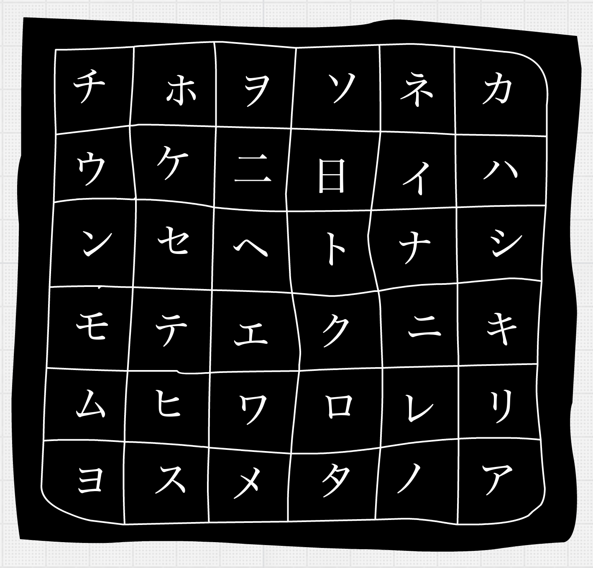

Matrix Rain in Clojurescript
Already done many times before, in many other languages, but I just had to scratch my geek itch ¯\_(ツ)_/¯
The source code can be found here.
Concepts
Instead of explaining the source code in detail, I thought it would be better to explain the concepts behind my design. In my view, matrix rain is basically a grid of randomly changing symbols, where the drops of rain are 'overlayed' on that grid by manipulating the colors of the symbols on it.

Matrix Grid
So there you have it: first you fill a grid by filling the grid cells with randomly picked symbols. Now we only have to randomly change symbols on the grid in a rate that looks about right and we're already done with the grid. On to the raindrops.
Raindrops
Now the grid is in place, the raindrops need to get the right color. White for the head, the two symbols behind that a little bit gray(er) and then a green, descending gradient, followed by completely invisible grid symbols ... until the next drop of rain runs over them!
Glueing it together
The Quil library will take care of the rendering on canvas, as long as we tell it what function to call to 'update' the matrix state and what function to call to 'draw' the current matrix state. The comment blocks in my code mark the different responsibilities of the code sections: definitions of some constants and update rates; grid creation and randomly changing symbols in the grid; generating raindrop colors, length and speed; merging it all together in a 'matrix state'; and finally configuring Quil to call the right functions.
Conclusion
There are probably shorter, faster and smarter implementations out there. This was my first attempt at visualising matrix rain. I think the design is quite easy to understand and implement. According to cloc it took me 102 lines of ClojureScript to get this matrix rain on my screen. I hope it inspires you to create something similar in your own language of choice. Be sure to drop me a link on twitter once it's up and running on a website.
Happy coding!